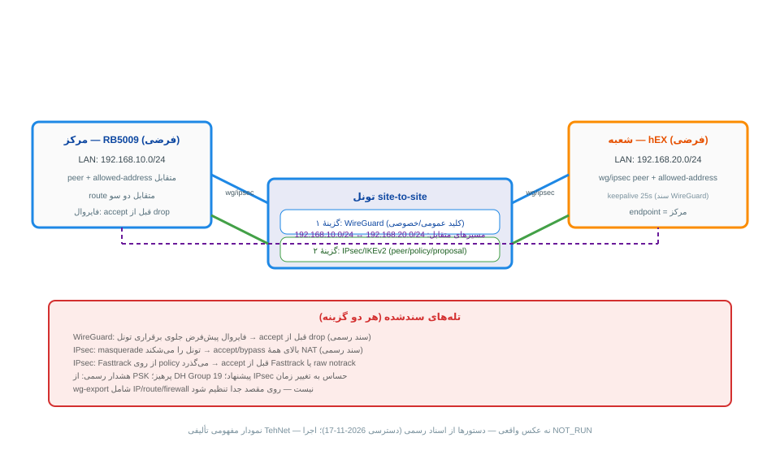

وضعیت درس: DRAFT / NOT_DEPLOYED — در انتظار مرور.
آموزش تصویری از سری MikroTik؛ مخاطب: مدیر IT و کارشناس شبکه.
سناریوی کاملاً فرضی و آموزشی با دادهٔ ساختگی؛ هیچ شبکهٔ واقعی دستکاری نشده و هیچ اجرای واقعی NOT_RUN است.
نمودار مفهومی و تألیفی است (نه عکس واقعی).
در RouterOS v7 دو گزینهٔ سندشدهٔ اصلی برای site-to-site شعبه: WireGuard (سند رسمی: «ساده، سریع و مدرن»؛ تنظیم با کلید عمومی/خصوصی و allowed-address؛ مناسب لینک اختصاصی دو سرِ RouterOS) و IPsec/IKEv2 (استاندارد سازمانی؛ برای همجوشی با تجهیزات multi-vendor و نیاز به policy-based). سه پرسش انتخاب: دستگاههای دو سر چیاند؟ آیا استاندارد/سیاست سازمانی فیلتر دارد؟ چه چیزی وسط مسیر است (NAT/آدرس دینامیک)؟ L2TP/SSTP/OpenVPN فقط برای سازگاری کلاینتهای خاص — خارج دامنهٔ این درس.
| بند | مقدار فرضی |
|---|---|
| دفتر مرکزی | RB5009 فرضی، RouterOS v7.16+، LAN 192.168.10.0/24 |
| شعبه | hEX فرضی، RouterOS v7.16+، LAN 192.168.20.0/24 |
| هدف | دسترسی متقابل شبکهها از طریق تونل (site-to-site) |
| اجرای واقعی | NOT_RUN — دستورها روال سندشدهاند |
| بند | WireGuard (سند رسمی) | IPsec (سند رسمی v7.26) |
|---|---|---|
| توصیف رسمی | «simple, fast, and modern»; «faster, simpler, and leaner than IPsec, and considerably more performant than OpenVPN» | چانهزنی دوفازی IKE؛ IKEv2 با تغییر `exchange-mode=ike2` |
| کلید/احراز | جفت کلید خودکار هنگام ساخت interface؛ peer با کلید عمومی طرف مقابل | Peer + Policy + Proposal؛ هشدار رسمی: «از PSK پرهیز کنید» (حملهٔ آفلاین)؛ پیشنهاد: DH Group 19؛ Group 2 با احتیاط |
| مسیر ترافیک به تونل | IP روی interface wireguard + route به `gateway=wireguard1` با allowed-address | policy با `tunnel=yes action=encrypt` و src/dst subnet؛ ترتیب policy مهم است |
| تلههای سندشده | «فایروال پیشفرض RouterOS جلوی برقراری تونل را میگیرد» → accept قبل از drop؛ wg-export شامل IP/route/firewall نیست؛ در multi-WAN handshake دو اتصال جدا دیده میشود (گزینهٔ responder) | Masquerade تونل را میشکند → rule accept قبل از همهٔ NAT؛ «اگر Fasttrack فعال باشد بسته از policyهای IPsec میگذرد» → accept قبل از Fasttrack یا raw notrack (~30٪ کاهش CPU)؛ حساسیت شدید به تغییر زمان |
| شتاب سختافزاری | — (روی CPU) | «شتابدهی سختافزاری رمزنگاری با موتور داخل CPU» — پشتیبانی وابسته به CPU (جدول per-CPU سند رسمی) |
| حالت مبتنی بر مسیر | ذاتاً route-based | XFRM interfaces (MTU پیشفرض 1400؛ flag بعد از برقراری SA) — امکان OSPF روی تونل |
# دفتر مرکزی (192.168.10.0/24)
/interface wireguard
add name=wg-branch listen-port=13231 comment="TN-M5 مرکز"
/ip address
add address=10.255.255.1/30 interface=wg-branch
:put [/interface/wireguard/get [find name=wg-branch] public-key]
# کلید عمومی بالا را در تنظیم peerِ شعبه بگذارید
/interface wireguard peers
add interface=wg-branch public-key="<public-key شعبه>" \
allowed-address=192.168.20.0/24,10.255.255.2/32 \
endpoint-address="<آدرس عمومی شعبه>" endpoint-port=13231 \
persistent-keepalive=25s comment="TN-M5 شعبه"
/ip route
add dst-address=192.168.20.0/24 gateway=wg-branch comment="TN-M5"
# فایروال: accept برایwg-branch قبل از هر drop (سند رسمی)# شعبه (192.168.20.0/24) — آینهٔ همین تنظیم با کلیدهای خودش
/ip route
add dst-address=192.168.10.0/24 gateway=wg-branch comment="TN-M5"allowed-address همزمان «چه ترافیکی مجاز است» و «چه چیزی از این peer میآید» را تعیین میکند (سند رسمی) — بازتر از نیاز ننویسید.
| سناریو | انتخاب | دلیل |
|---|---|---|
| دو سر هر دو RouterOS v7، لینک اختصاصی | WireGuard | سادگی تنظیم + کارایی (سند رسمی) |
| همجوشی با فایروال/سوئیچ vendor دیگر | IPsec/IKEv2 | استاندارد صنعتی (MSAگونه برای تونل) |
| هر دو سر آدرس دینامیک | WireGuard با persistent-keepalive (25s سند مثال) یا IPsec با تنظیم مناسب؛ سناریوی دقیق per-محیط | UNKNOWN جزئیات |
| نیاز به OSPF روی تونل | IPsec با XFRM (route-based، MTU 1400) | سند رسمی |

شرح متنی نمودار (جایگزین تصویر برای دسترسپذیری): دو ساختمان: شعبه (hEX، LAN 192.168.20.0/24) و مرکز (RB5009، LAN 192.168.10.0/24). بین دو روتر یک تونل رسمشده با دو گزینهٔ روی نمودار: WireGuard (کلید عمومی/خصوصی، allowed-address، keepalive 25s) یا IPsec/IKEv2 (peer/policy/proposal + ruleهای accept قبل از NAT و Fasttrack). زیر تونل: مسیرهای متقابل 192.168.20.0/24 ↔ 192.168.10.0/24. برچسب «تألیفی/مفهومی» و یادداشت NOT_RUN.
| نشانه | علت محتمل | بررسی | راهحل |
|---|---|---|---|
| WireGuard اصلاً handshake نمیشود | فایروال پیشفرض جلوی تونل | سند رسمی صراحت دارد | accept ورودی wg-branch قبل از dropها |
| تونل بالا ولی ترافیک نمیرود | allowed-address تنگ/اشتباه یا route جا افتاده | `/interface wireguard peers print` + `/ip route print` | allowed-address دقیق + route هر طرف |
| IPsec با masquerade بالا نمیآید | NAT آدرس مبدأ را قبل از رمزنگاری میشکند (سند رسمی) | ترتیب NAT | accept/bypass قبل از masquerade |
| IPsec بعد از گذشت زمان قطع شد | حساسیت شدید به تغییر زمان (سند رسمی) | ساعت/NTP | همزمانسازی NTP |
| PSK استفاده شده | هشدار رسمی حملهٔ آفلاین | سند رسمی | کلید دیجیتال/گروه DH 19 |
| روی multi-WAN لنگ میزند | handshake دو اتصال جدا دیده میشود | سند رسمی | گزینهٔ responder |
| پیوند | مقصد |
|---|---|
| درسهای مرتبط | M2 VLAN · M4 L3HW · N1 عیبیابی |
| نقشهٔ کامل سری | topic map |
| اتصال امن شعب برای سازمان شما | خدمات میکروتیک تهران |
| درس بعدی سری | M6 — dual-WAN و failover (تولید در نوبت بعدی؛ فعلاً فقط در topic map) |